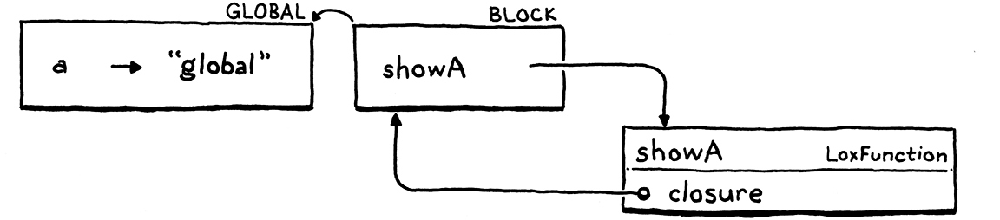
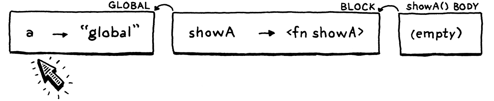
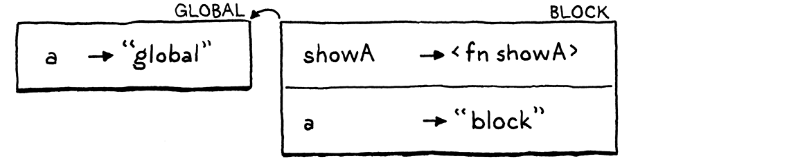
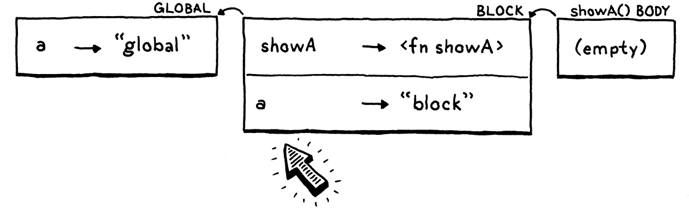
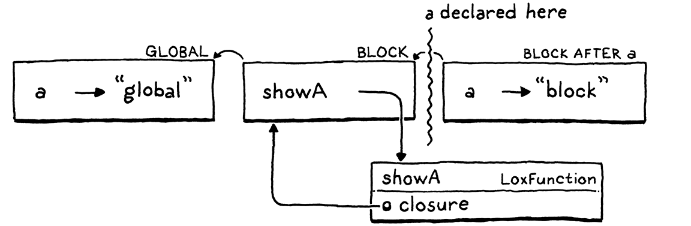

Resolving and Binding
This book is a work in progress!
×If you see a mistake, find something unclear, or have a suggestion, please let me know. To learn when new chapters are up, join the mailing list:
(I post about once a month. Don’t worry, I won’t spam you.)
Once in a while you find yourself in an odd situation. You get into it by degrees and in the most natural way but, when you are right in the midst of it, you are suddenly astonished and ask yourself how in the world it all came about.
Thor Heyerdahl
Oh, no! Our language implementation is taking on water! Way back when we added variables and blocks, we had scoping nice and tight. But when we later added closures, a hole opened in our formerly waterproof interpreter. Most real programs are unlikely to slip through this hole, but as language implementers, we take a sacred vow to care about correctness even in the deepest, dampest corners of the semantics.
We will spend this entire chapter exploring that leak, and then carefully patching it up. In the process, we will gain a more rigorous understanding of lexical scoping as used by Lox and other languages in the C tradition. We’ll also get a chance to learn about semantic analysis — a powerful technique for extracting meaning from the user’s source code without having to run it.
11 . 1 Static Scope
A quick refresher: Lox, like most modern languages, uses lexical scoping. This means that you can figure out which declaration a variable name refers to just by reading the text of the program. For example:
var a = "outer"; { var a = "inner"; print a; }
Here, we know that the a being printed is the variable declared on the
previous line, and not the global one. Running the program doesn’t — can’t — affect this. The scope rules are part of the static semantics of the language,
which is why they’re also called “static scope”.
I haven’t spelled out those scope rules, but now is the time for precision:
A variable usage refers to the preceding declaration with the same name in the innermost scope that encloses the expression where the variable is used.
There’s a lot to unpack in that:
-
I say “variable usage” instead of “variable expression” to cover both variable expressions and assignments. Likewise “expression where the variable is used”.
-
“Preceding” means appearing before in the program text. Given:
var a = "outer"; { print a; var a = "inner"; }
Here, the
abeing printed is the outer one since it appears before the print statement that uses it. In most cases, in straight line code, the declaration preceding in text will also precede the usage in time. But that’s not always true. As we’ll see, functions may defer a chunk of code such that its dynamic temporal execution no longer mirrors the static textual ordering. -
“Innermost” is there because of our good friend shadowing. There may be more than one variable with the given name in enclosing scopes, as in:
var a = "outer"; { var a = "inner"; print a; }
Our rule disambiguates this case by saying the innermost scope wins.
Since this rule makes no mention of any runtime behavior, it implies that a variable expression always refers to the same declaration through the entire execution of the program. Our interpreter so far mostly implements the rule correctly. But when we added closures, an error snuck in:
var a = "global"; { fun showA() { print a; } showA(); var a = "block"; showA(); }
Before you type this in and run it, decide what you think it should print.
OK… got it? If you’re familiar with closures in other languages, you’ll expect
it to print “global” twice. The first call to showA() should definitely print
“global” since we haven’t even reached the declaration of the inner a yet. And
by our rule that a variable expression always resolves to the same variable,
that implies the second call to showA() should print the same thing.
Alas, it prints:
global block
Let me stress that this program never reassigns any variable and only contains a single print statement. Yet, somehow, that print statement for a never-assigned variable prints two different values at different points in time. We definitely broke something somewhere.
11 . 1 . 1 Scopes and mutable environments
In our interpreter, environments are the dynamic manifestation of static scopes. The two mostly stay in sync with each other — we create a new environment when we enter a new scope, and discard it when we leave the scope. There is one other operation we perform on environments: binding a variable in one. This is where our bug lies.
Let’s walk through that problematic example and see what the environments look
like at each step. First, we declare a in the global scope:
That gives us a single environment with a single variable in it. Then we enter
the block and execute the declaration of showA():

We get a new environment for the block. In that, we declare one name showA,
which is bound to the LoxFunction object we create to represent the function.
That object has a closure field that captures the environment where the
function was declared, so it has a reference back to the environment for the
block.
Now we call showA():

The interpreter dynamically creates a new environment for the function body of
showA(). It’s empty since that function doesn’t declare any variables. The
parent of that environment is the function’s closure — the outer block
environment.
Inside the body of showA(), we print the value of a. The interpreter looks
up a’s value by walking the chain of environments. It gets all the way
to the global environment before finding it there and printing "global".
Great.
Next, we declare the second a, this time inside the block:

It’s in the same block as showA(), so it goes into the same environment, which
is also the same environment showA()’s closure refers to. This is where
it gets interesting. We call showA() again:

We create a new empty environment for the body of showA() again, wire it up to
that closure, and run the body. When the interpreter walks the chain of
environments to find a, it now discovers the new a in the block
environment. Boo.
I chose to implement environments in a way that I hoped would agree with your informal intuition around scopes. We tend to consider all of the code within a block as being within the same scope, so our interpreter uses a single environment to represent that. Each environment is a mutable hash table. When a new local variable is declared, it gets added to the existing environment for that scope.
That intuition, like many in life, isn’t quite right. A block is not all actually the same scope. Consider:
{ var a; // 1. var b; // 2. }
At the first marked line, only a is in scope. At the second line, both a and
b are. If you define a “scope” to be a set of declarations, then those are
clearly not the same scope — they don’t contain the same declarations. It’s
like each variable statement splits the block into two
separate scopes, the scope before the variable is declared and the one after,
which includes the new variable.
But in our implementation, environments do act like the entire block is one scope, just a scope that changes over time. Closures do not like that. When a function is declared, it captures a reference to the current environment. The function should capture a frozen snapshot of the environment as it existed at the moment the function was declared. But, instead, in the Java code, it has a reference to the actual mutable environment object. When a variable is later declared in the scope that environment corresponds to, the closure sees the new variable, even though the declaration does not precede the function.
11 . 1 . 2 Persistent environments
There is a style of programming that uses what are called “persistent data structures”. Unlike the squishy data structures you’re familiar with in imperative programming, a persistent data structure can never be directly modified. Instead, any “modification” to an existing structure produces a brand new object that contains all of the original data and the new modification. The original is left unchanged.
If we were to apply that technique to Environment, then every time you declared a variable it would return a new environment that contained all of the previously-declared variables along with the one new name. Declaring a variable would do the implicit “split” where you have an environment before the variable is declared and one after:

A closure retains a reference to the Environment instance in play when the function was declared. Since any later declarations in that block would produce new Environment objects, the closure wouldn’t see the new variables and our bug would be fixed.
This is a legit way to solve the problem, and it’s the classic way to implement environments in Scheme interpreters. We could do that for Lox, but it would mean going back and changing a pile of existing code.
I won’t drag you through that. We’ll keep the way we represent environments the same. Instead of making the data more statically structured, we’ll bake the static resolution into the access operation itself.
11 . 2 Semantic Analysis
Our interpreter resolves a variable — tracks down which declaration it refers to — each and every time the variable expression is evaluated. If that variable is swaddled inside a loop that runs a thousand times, that variable gets re-resolved a thousand times.
We know static scope means that a variable usage always resolves to the same declaration, which can be determined just by looking at the text. Given that, why are we doing it dynamically every time? Doing so doesn’t just open the hole that leads to our annoying bug, it’s also needlessly slow.
A better solution is to resolve each variable use once. Write a chunk of code that inspects the user’s program, finds every variable mentioned, and figures out which declaration each refers to. This process is an example of a semantic analysis. Where a parser only tells if a program is grammatically correct — a syntactic analysis — semantic analysis goes farther and starts to figure out what pieces of the program actually mean. In this case, our analysis will resolve variable bindings. We’ll know not just that an expression is a variable, but which variable it is.
There are a lot of ways we could store the binding between a variable and its declaration. When we get to the C interpreter for Lox, we’ll have a much more efficient way of storing and accessing local variables. But for jlox, I want to minimize the collateral damage we inflict on our existing codebase. I’d hate to throw out a bunch of mostly-fine code.
Instead, we’ll store the resolution in a way that makes the most out of our
existing Environment class. Recall how the accesses of a are interpreted in
the problematic example:
In the first (correct) evaluation, we seek through three environments in the
chain before finding the global declaration of a. Then, when the inner a is
later declared in a block scope, it shadows the global one:
The next look up walks the chain, finds a in the second environment and
stops there. Each environment corresponds to a single lexical scope where
variables are declared. If we could ensure a variable lookup always walked the
same number of links in the environment chain, that would ensure that it
found the same variable in the same scope every time.
To “resolve” a variable usage, we only need to calculate how many “hops” away the declared variable will be in the environment chain. The interesting question is when to do this calculation — or, put differently, where in our interpreter’s implementation do we stuff the code for it?
Since we’re calcuting a static property based on the structure of the source code, the obvious answer is in the parser. That is the traditional home, and is where we’ll do it later in clox. It would work here too, but I want an excuse to show you another technique. We’ll write our resolver as a separate pass.
11 . 2 . 1 A variable resolution pass
After the parser produces the syntax tree, but before the interpreter starts executing it, we’ll do a single walk over the tree to resolve all of the variables it contains. Additional passes between parsing and execution are common. If Lox had static types, we could slide a type checker in there. Optimizations are often implemented in separate passes like this too. Basically, any work that doesn’t rely on state that’s only available at runtime can be done in this way.
Our variable resolution pass works like a sort of mini-interpreter. It walks the tree, visiting each node, but a static analysis is different from a dynamic execution:
-
There are no side effects. When the static analysis visits a print statement, it doesn’t actually print anything. Calls to native functions or other operations that reach out to the outside world are stubbed out and have no effect.
-
There is no control flow. Loops are only visited once. Both branches are visited in if statements. Logic operators are not short-circuited.
11 . 3 A Resolver Class
Like everything in Java, our variable resolution pass lives nestled in a class:
create new file
package com.craftinginterpreters.lox; import java.util.HashMap; import java.util.List; import java.util.Map; import java.util.Stack; class Resolver implements Expr.Visitor<Void>, Stmt.Visitor<Void> { private final Interpreter interpreter; Resolver(Interpreter interpreter) { this.interpreter = interpreter; } }
Since the resolver needs to visit every node in the syntax tree, it will implement the handy Visitor abstraction we already have in place. Only a couple of nodes are interesting when it comes to resolving variables:
-
A block statement introduces a new scope for the statements it contains.
-
A function declaration introduces a new scope for its body and binds its parameters in that scope.
-
A variable declaration adds a new variable to the current scope.
-
Variable and assignment expressions need to have their variables resolved.
The rest of the nodes don’t do anything special, but we still need to implement
visit methods for them that traverse into their subtrees. Even though a +
expression doesn’t itself have any variables to resolve, either of its
operands might.
11 . 3 . 1 Resolving blocks
We’ll start with blocks since they create the local scopes where all the magic happens:
add after Resolver()
@Override public Void visitBlockStmt(Stmt.Block stmt) { beginScope(); resolve(stmt.statements); endScope(); return null; }
This begins a new scope, traverses into the statements inside the block, and then discards the scope. The fun stuff lives in those helper methods. We’ll start with the simple one:
add after Resolver()
void resolve(List<Stmt> statements) { for (Stmt statement : statements) { resolve(statement); } }
This walks a list of statements and resolves each one. It in turn calls:
add after visitBlockStmt()
private void resolve(Stmt stmt) { stmt.accept(this); }
This is similar to the evaluate() and execute() methods in Interpreter — it
turns around and applies the Visitor pattern to the given syntax tree node.
The real interesting behavior is around scopes. A new block scope is created like so:
add after resolve()
private void beginScope() { scopes.push(new HashMap<String, Boolean>()); }
Lexical scopes nest and in both the interpreter and the resolver, they are treated like a stack. The interpreter implements that stack using a linked list — the chain of Environment objects. In the resolver, we use an actual Java Stack:
private final Interpreter interpreter;
in class Resolver
private final Stack<Map<String, Boolean>> scopes = new Stack<>();
Resolver(Interpreter interpreter) {
This field keeps track of the stack of scopes currently… uh… in scope. Each element in the stack is a Map representing a single block scope. Keys, as in Environment, are variable names. (We’ll get to why the values are Booleans soon.)
The scope stack is only used for local block scopes. Variables declared at the top level in the global scope are not tracked by the resolver since they are more dynamic in Lox. When resolving a variable, if we can’t find it in the stack of local scopes, we assume it must be global.
Since scopes are stored in an explicit stack, exiting one is straightforward:
add after beginScope()
private void endScope() { scopes.pop(); }
This gives us a stack of empty scopes. Let’s put some things in them.
11 . 3 . 2 Resolving variable declarations
Resolving a variable declaration adds a new entry to the current innermost scope’s map. That seems simple, but there’s a little dance we need to do:
add after visitBlockStmt()
@Override public Void visitVarStmt(Stmt.Var stmt) { declare(stmt.name); if (stmt.initializer != null) { resolve(stmt.initializer); } define(stmt.name); return null; }
Before we get to the interesting code, we need another overload of resolve()
to resolve an expression instead of a statement:
in resolve()
private void resolve(Expr expr) { expr.accept(this); }
Now to the semantics. We split binding into two separate steps — declaring and defining — in order to handle this funny edge case:
var a = "outer"; { var a = a; }
What happens when the initializer for a local variable refers to a variable with the same name as what’s being declared? We have a couple of options:
-
Run the initializer, then put the new variable in scope. That means here the new local
awould be initialized with “outer”, the value of the global one. In other words, the previous declaration desugars to:var temp = a; // Run the initializer. var a; // Declare the variable. a = temp; // Initialize it.
-
Put the new variable in scope, then run the initializer. This means you can observe a variable before it’s initialized, so we need to figure out what value it would have then. Probably
nil. That means the new localawould be re-initialized to its own implicitly initialized value,nil. Now the desugaring looks like:var a; // Define the variable. a = a; // Run the initializer.
-
Make it an error to reference a variable in its initializer. Have the interpreter fail either at compile time or runtime if an initializer mentions the variable being initialized.
Do either of those first two options look like something a user actually wants? Shadowing is rare and often an error so initializing a shadowing variable based on the value of the shadowed one seems unlikely to be deliberate.
The second option is even less useful. The new variable will always have the
value nil. There is never any point in mentioning it by name. You could use an
explicit nil instead.
Since the first two options are likely to mask user errors, we’ll take the third. Further, we’ll make it a compile error instead of a runtime one. That way, the user is alerted to the problem before any code is run.
In order to do that, as we visit expressions, we need to know if we’re inside the initializer for some variable. We do that by splitting binding into two steps. The first is declaring it:
add after endScope()
private void declare(Token name) { if (scopes.isEmpty()) return; Map<String, Boolean> scope = scopes.peek(); scope.put(name.lexeme, false); }
This adds the variable to the innermost scope so that it shadows any outer one
and so that we know the variable exists. We mark it as “not ready yet” by
binding its name to false in the scope map. Each value in the scope map means
“is finished being initialized”.
Then we resolve the variable’s initializer expression itself in the scope where the new variable is declared but unavailable. Once the initializer expression is done, the variable is ready for prime time. We do that by defining it:
add after declare()
private void define(Token name) { if (scopes.isEmpty()) return; scopes.peek().put(name.lexeme, true); }
We set the variable’s value in the scope map to true to mark it as fully
initialized and available for use. It’s alive!
11 . 3 . 3 Resolving variable expressions
Variable declarations — and function declarations, which we’ll get to — write to the scope maps. Those maps are read when we resolve variable expressions:
add after visitVarStmt()
@Override public Void visitVariableExpr(Expr.Variable expr) { if (!scopes.isEmpty() && scopes.peek().get(expr.name.lexeme) == Boolean.FALSE) { Lox.error(expr.name, "Cannot read local variable in its own initializer."); } resolveLocal(expr, expr.name); return null; }
First, we check to see if the variable is being accessed inside its own
initializer. This is where the values in the scope map come into play. If the
variable exists in the current scope but its value is false, that means we
have declared it but not yet defined it. We report that error.
After that check, we actually resolve the variable itself using this helper:
add after define()
private void resolveLocal(Expr expr, Token name) { for (int i = scopes.size() - 1; i >= 0; i--) { if (scopes.get(i).containsKey(name.lexeme)) { interpreter.resolve(expr, scopes.size() - 1 - i); return; } } // Not found. Assume it is global. }
This looks, for good reason, a lot like the code in Environment for evaluating a variable. We start at the innermost scope and work outwards, looking in each map for a matching name. If we find the variable, we tell the interpreter it has been resolved, passing in the number of scopes between the current innermost scope and the scope where the variable was found. So, if the variable was found in the current scope, it passes in 0. If it’s in the immediately enclosing scope, 1. You get the idea.
We’ll get to the implementation of that method a little later. For now, let’s keep on cranking through the other syntax nodes.
11 . 3 . 4 Resolving assignment expressions
The other expression that mentions a variable is assignment. Resolving one looks like this:
add after visitVarStmt()
@Override public Void visitAssignExpr(Expr.Assign expr) { resolve(expr.value); resolveLocal(expr, expr.name); return null; }
First, we resolve the expression for the assigned value in case it also contains
references to other variables. Then we use our existing resolveLocal() method
to resolve the variable that’s being assigned to.
11 . 3 . 5 Resolving function declarations
Finally, functions. Functions both bind names and introduce a scope. The name of the function itself is bound in the surrounding scope where the function is declared. When we step into the function’s body, we also bind its parameters into that inner scope.
add after visitBlockStmt()
@Override public Void visitFunctionStmt(Stmt.Function stmt) { declare(stmt.name); define(stmt.name); resolveFunction(stmt); return null; }
Similar to visitVariableStmt(), we declare and define the name of the function
in the current scope. Unlike variables, though, we define the name eagerly,
before resolving the function’s body. This lets a function recursively refer to
itself inside its own body.
Then we handle the function’s body using this:
add after resolve()
private void resolveFunction(Stmt.Function function) { beginScope(); for (Token param : function.parameters) { declare(param); define(param); } resolve(function.body); endScope(); }
It’s a separate method since we will also use it for resolving Lox methods when we add classes later. It creates a new scope for the body and then binds variables for each of the function’s parameters.
Once that’s ready, it resolves the function body in that scope. This is different from how the interpreter handles function declarations. At runtime declaring a function doesn’t do anything with the function’s body. That doesn’t get touched until later when the function is called. In a static analysis, we immediately traverse into the body right then and there.
11 . 3 . 6 Resolving the other syntax tree nodes
That covers the interesting corners of the grammars. We handle every place where a variable is declared, read or written, and every place where a scope is created or destroyed.
All that remains is visit methods for the other syntax tree nodes to recurse into their subtrees. Sorry this is boring, but bear with me. We’ll go kind of “top down” and start with statements.
add after visitBlockStmt()
@Override public Void visitExpressionStmt(Stmt.Expression stmt) { resolve(stmt.expression); return null; }
An expression statement contains a single expression to traverse.
add after visitFunctionStmt()
@Override public Void visitIfStmt(Stmt.If stmt) { resolve(stmt.condition); resolve(stmt.thenBranch); if (stmt.elseBranch != null) resolve(stmt.elseBranch); return null; }
Here, we can see how resolution is different from interpretation. When we resolve an if statement, there is no control flow. We resolve the condition and both branches. Where a dynamic execution only steps into the branch that is run, a static analysis is conservative — it analyzes any branch that could be run. Since either one could be reached at runtime, it resolves both.
Moving along…
add after visitIfStmt()
@Override public Void visitPrintStmt(Stmt.Print stmt) { resolve(stmt.expression); return null; }
Like expression statements, a print statement contains a single subexpression.
add after visitPrintStmt()
@Override public Void visitReturnStmt(Stmt.Return stmt) { if (stmt.value != null) { resolve(stmt.value); } return null; }
Same deal for return.
add after visitVarStmt()
@Override public Void visitWhileStmt(Stmt.While stmt) { resolve(stmt.condition); resolve(stmt.body); return null; }
As in if statements, with a while statement, we resolve its condition and resolve the body exactly once.
That covers all the statements. Onto expressions…
add after visitAssignExpr()
@Override public Void visitBinaryExpr(Expr.Binary expr) { resolve(expr.left); resolve(expr.right); return null; }
Our old friend the binary expression. We traverse into and resolve both operands.
add after visitBinaryExpr()
@Override public Void visitCallExpr(Expr.Call expr) { resolve(expr.callee); for (Expr argument : expr.arguments) { resolve(argument); } return null; }
Calls are similar — we walk the argument list and resolve them all. The thing being called is also an expression (usually a variable expression) so that gets resolved too.
add after visitCallExpr()
@Override public Void visitGroupingExpr(Expr.Grouping expr) { resolve(expr.expression); return null; }
Parentheses are easy.
add after visitGroupingExpr()
@Override public Void visitLiteralExpr(Expr.Literal expr) { return null; }
Literals are easiest of all. Since a literal expression doesn’t mention any variables and doesn’t contain any subexpressions, there is no work to do.
add after visitLiteralExpr()
@Override public Void visitLogicalExpr(Expr.Logical expr) { resolve(expr.left); resolve(expr.right); return null; }
Since a static analysis does no control flow or short-circuiting, logical expressions are exactly the same as other binary operators.
add after visitLogicalExpr()
@Override public Void visitUnaryExpr(Expr.Unary expr) { resolve(expr.right); return null; }
And, finally, the last node. We resolve its one operand. With all of these visit methods, the Java compiler should be satisfied that we’ve fully implemented Stmt.Visitor and Expr.Visitor. Now is a good time to take a break, have a snack, maybe a little nap.
11 . 4 Interpreting Resolved Variables
Let’s see what our resolver is good for. Each time it visits a variable, it tells the interpreter how many scopes there are between the current scope and the scope where the variable is defined. At runtime, this corresponds exactly to the number of environments between the current one and the enclosing one where the interpreter can find the variable’s value. The resolver hands that number to the interpreter by calling this:
add after execute()
void resolve(Expr expr, int depth) { locals.put(expr, depth); }
We want to store the resolution information somewhere so we can use it when the variable or assignment expression is later executed, but where? One obvious place is right in the syntax tree node itself. That’s a fine approach, and that’s where many compilers store the results of analyses like this.
We could do that, but it would require mucking around with our syntax tree generator. Instead, we’ll take another common approach and store it off to the side in a map that associates each syntax tree node with its resolved data:
private Environment environment = globals;
in class Interpreter
private final Map<Expr, Integer> locals = new HashMap<>();
Interpreter() {
You might think we’d need some sort of nested tree structure to avoid getting confused when there are multiple expressions that reference the same variable, but each expression node is its own Java object with its own unique identity. A single monolithic map doesn’t have any trouble keeping them separated.
As usual, using a collection requires us to import a couple of names:
import java.util.ArrayList;
import java.util.HashMap;
import java.util.List;
And:
import java.util.List;
import java.util.Map;
class Interpreter implements Expr.Visitor<Object>, Stmt.Visitor<Void> {
11 . 4 . 1 Accessing a resolved variable
Our interpreter now has access to each variable’s resolved location. Finally, we get to make use of that. We replace the visit method for variable expressions with this:
public Object visitVariableExpr(Expr.Variable expr) {
in visitVariableExpr()
replace 1 line
return lookUpVariable(expr.name, expr);
}
That delegates to:
add after visitVariableExpr()
private Object lookUpVariable(Token name, Expr expr) { Integer distance = locals.get(expr); if (distance != null) { return environment.getAt(distance, name.lexeme); } else { return globals.get(name); } }
There’s a couple of things going on here. First, we look up the resolved
distance in the map. Remember that we only resolved local variables. Globals
are treated specially and don’t end up in the map (hence the name locals). So,
if we don’t find the distance in the map, it must be global. In that case, we
look it up, dynamically, directly in the global environment. That throws a
runtime error if the variable isn’t defined.
If we did get a distance, we have a local variable, and we get to take
advantage of the results of our static analysis. Instead of calling get(), we
call this new method on Environment:
add after define()
Object getAt(int distance, String name) { return ancestor(distance).values.get(name); }
The old get() method dynamically walks the chain of enclosing environments,
scouring each one to see if the variable might be hiding in there somewhere. But
now we know exactly which environment in the chain will have the variable. We
reach it using this helper method:
add after define()
Environment ancestor(int distance) { Environment environment = this; for (int i = 0; i < distance; i++) { environment = environment.enclosing; } return environment; }
This walks a fixed number of hops up the parent chain and returns the
environment there. Once we have that, getAt() simply returns the value of the
variable in that environment’s map. It doesn’t even have to check to see if the
variable is there — we know it will be because the resolver already found it
before.
11 . 4 . 2 Assigning to a resolved variable
We can also use a variable by assigning to it. The changes to visiting an assignment expression are similar:
Object value = evaluate(expr.value);
in visitAssignExpr()
replace 1 line
Integer distance = locals.get(expr); if (distance != null) { environment.assignAt(distance, expr.name, value); } else { globals.assign(expr.name, value); }
return value;
Again, we look up the variable’s scope distance. If not found, we assume it’s global and handle it the same way as before. Otherwise, we call this new method:
add after getAt()
void assignAt(int distance, Token name, Object value) { ancestor(distance).values.put(name.lexeme, value); }
As getAt() is to get(), this is to assign(). It walks a fixed number of
environments, and then stuffs the new value in that map.
Those are the only changes to Interpreter. This is why I chose a representation for our resolved data that was minimally invasive. All of the rest of the nodes continue working as they did before. Even the code for modifying environments is unchanged.
11 . 4 . 3 Running the resolver
We do need to actually run the resolver, though. We insert the new pass after the parser does its magic:
// Stop if there was a syntax error. if (hadError) return;
in run()
Resolver resolver = new Resolver(interpreter); resolver.resolve(statements);
interpreter.interpret(statements);
We don’t run the resolver if there are any parse errors. If the code has a syntax error, it’s never going to run, so there’s little value in resolving it. If the syntax is clean, we tell the resolver to do its thing. The resolver has a reference to the interpreter and pokes the resolution data directly into it as it walks over variables. When we next run the interpreter, it has everything it needs.
At least, that’s true if the resolver succeeds. But what about errors during resolution?
11 . 5 Resolution Errors
Since we are doing a semantic analysis pass, we have an opportunity to make Lox’s semantics more precise, and to help users catch bugs early before running their code. Take a look at this bad boy:
fun bad() { var a = "first"; var a = "second"; }
We do allow declaring multiple variables with the same name in the global
scope, but doing so in a local scope is probably a mistake. If they knew the
variable already existed, they would assign to it instead of using var. And if
they didn’t know it existed, they probably don’t intend to overwrite the
previous one.
We can detect this mistake statically while resolving:
Map<String, Boolean> scope = scopes.peek();
in declare()
if (scope.containsKey(name.lexeme)) { Lox.error(name, "Variable with this name already declared in this scope."); }
scope.put(name.lexeme, false);
When we declare a variable in a local scope, we already know the names of every variable previously declared in that same scope. If we see a collision, we report an error.
11 . 5 . 1 Invalid return errors
Here’s another nasty little script:
return "at top level";
This executes a return statement but it’s not even inside a function at all. It’s top level code. I don’t know what the user thinks is going to happen, but I don’t think we want Lox to allow this.
We can extend the resolver to detect this statically. Much like it tracks scopes as it walks the tree, it can track whether or not the current code is inside a function declaration or not:
private final Stack<Map<String, Boolean>> scopes = new Stack<>();
in class Resolver
private FunctionType currentFunction = FunctionType.NONE;
Resolver(Interpreter interpreter) {
Instead of a bare Boolean, it uses this funny enum:
add after Resolver()
private enum FunctionType { NONE, FUNCTION }
It seems kind of dumb now, but we’ll add a couple more cases to it later and then it will make more sense. When we resolve a function declaration, we pass that in:
define(stmt.name);
in visitFunctionStmt()
replace 1 line
resolveFunction(stmt, FunctionType.FUNCTION);
return null;
Over in resolveFunction(), we take that parameter and store it in the field
before resolving the body:
method resolveFunction()
replace 1 line
private void resolveFunction( Stmt.Function function, FunctionType type) { FunctionType enclosingFunction = currentFunction; currentFunction = type;
beginScope();
We stash the previous value of the field in a local variable first. Remember, Lox has local functions, so you can nest function declarations arbitrarily deeply. We need to keep track not just that we’re in a function, but how many we’re in.
We could use an explicit stack of FunctionType values for that, but instead we’ll piggyback on the JVM. We store the previous value in a local on the Java stack. When we’re done resolving the function body, we restore the field to that value:
endScope();
in resolveFunction()
currentFunction = enclosingFunction;
}
Now that we can always tell whether or not we’re inside a function declaration, we check that when resolving a return statement:
public Void visitReturnStmt(Stmt.Return stmt) {
in visitReturnStmt()
if (currentFunction == FunctionType.NONE) { Lox.error(stmt.keyword, "Cannot return from top-level code."); }
if (stmt.value != null) {
Neat, right?
There’s one more piece. Back in the main Lox class that stitches everything together, we are careful to not run the interpreter if any parse errors are encountered. That check runs before the resolver so that we don’t try to resolve syntactically invalid code.
But we also need to skip the interpreter if there are resolution errors, so we add another check:
resolver.resolve(statements);
in run()
// Stop if there was a resolution error. if (hadError) return;
interpreter.interpret(statements);
You could imagine doing lots of other analysis in here. For example, if we added break statements to Lox, we probably want to ensure they are only used inside loops.
We could go farther and report warnings for code that isn’t necessarily wrong but probably isn’t useful. For example, many IDEs will warn if you have unreachable code after a return statement, or a local variable whose value is never read. All of that would be pretty easy to add to our static visiting pass, or as separate passes.
But, for now, we’ll stick with that limited amount of analysis. The important part is that we fixed that one weird annoying edge case bug, though it might be surprising that it took this much work to do it.
Challenges
-
Why is it safe to eagerly define the variable bound to a function’s name when other variables must wait until after they are initialized before they can be used?
-
How do other languages you know handle local variables that refer to the same name in their initializer, like:
var a = "outer"; { var a = a; }
Is it a runtime error? Compile error? Allowed? Do they treat global variables differently? Do you agree with their choices? Justify your answer.
-
Extend the resolver to report an error if a local variable is never used.
-
Our resolver calculates which environment the variable is found in, but it’s still looked up by name in that map. A more efficient environment representation would store local variables in an array and look them up by index.
Extend the resolver to associate a unique index for each local variable declared in a scope. When resolving a variable access, look up both the scope the variable is in and its index and store that. In the interpreter, use that to quickly access a variable by its index instead of using a map.